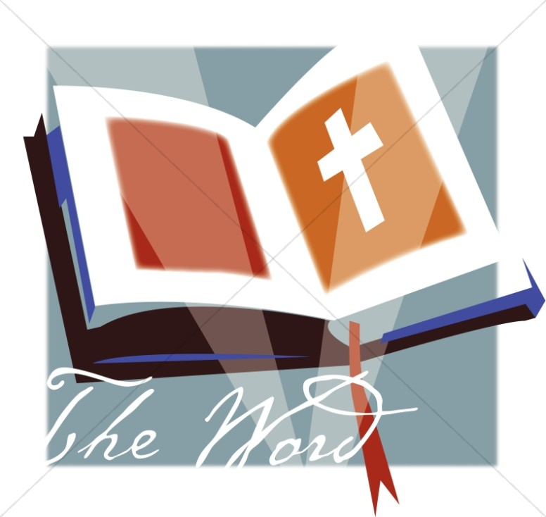

How To Grow In the Word of God
The Bible is the Christian's Essential Nourishment
The Word and Open Bible It's a fascinating compilation of writings, consisting of 66 separate books, written
over approximately 1,600 years, by at least 40 distinct authors, in three different languages. It's the Bible,
the Book of Books, the Good Book, the Word of God. For the believer, the spiritual blessing of Food Through
the Word is as important as water to drink or air to breathe. It is only through the knowledge of God found in
the Bible that a believer can have a filter to sift and sort truth from error. It is only through God's revealed
Word that the believer can learn the will of God and their purpose in life.

David loved God and he loved His Word. All 176 verses in Psalm 119 mention the Word of God. “How sweet are Your
words to my taste, sweeter than honey to my mouth!” (Psalm 119:103) In Psalm 19, David wrote, “The law of the Lord
is perfect, converting the soul: the testimony of the Lord is sure, making wise the simple.
The statutes of the Lord are right, rejoicing the heart: the commandment of the Lord is pure, enlightening the
eyes. The fear of the Lord is clean, enduring for ever: the judgments of the Lord are true and righteous altogether.
More to be desired are they than gold, yea, than much fine gold: sweeter also than honey and the honeycomb.”
(19:7-10)
Over 700 years before Jesus walked the earth, Hosea wrote about the perilous condition of God's people. “My people
are destroyed for lack of knowledge.” (4:6) Another hundred years passed, and Jeremiah spoke for God to the people.
“For My people have committed two evils: They have forsaken Me, the fountain of living waters, and hewn themselves
cisterns -- broken cisterns that can hold no water.” (2:13) Instead of going by the revealed Word of God, the people
made up their own religions, broken religions that held no water. Through the centuries, even though they were warned
again and again, God's people repeatedly neglected the Word of God, and always brought adversity upon themselves.
Moses taught “that man shall not live by bread alone; but man lives by every word that proceeds from the mouth of
the Lord.” (Deuteronomy 8:3)
Hundreds of years later, when a very hungry Jesus was being tempted by the devil to make stones into bread, Jesus
quoted the words from Deuteronomy. Jesus knew Scripture inside out and backwards, and He knew that it was His
nourishment, His strategy, and His mandate, as well as His weapon. Jesus knew His mission and His destiny because
Jesus knew the Word and He was the Word.
In John 6:27 and following, Jesus said, “Do not labor for the food which perishes, but for the food which endures
to everlasting life, which the Son of Man will give you, because God the Father has set His seal on Him.” The people
then asked Jesus for a sign like manna from heaven, “that we may see it and believe You?” Jesus proceeded to teach
them truths that would separate the men from the boys. “For the bread of God is He who comes down from heaven and gives
life to the world. And Jesus said to them, 'I am the bread of life. He who comes to Me shall never hunger, and he who
believes in Me shall never thirst. I am the living bread which came down from heaven. If anyone eats of this bread, he
will live forever; and the bread that I shall give is My flesh, which I shall give for the life of the world.'”
Jesus spoke life-giving words for all who have ears to hear, eyes to see, hearts to understand, and a spiritual
hunger. “The words that I speak to you are spirit, and they are life.” (John 6:63) People can come to Jesus and believe
on Him by way of the Word of God, the Bible. To eat of the bread of life is to feast on all Jesus Christ accomplished
for humanity on the cross, through His death, resurrection and ascension. Jesus is the Bread of Life, the Word of Life,
the Word of God. (John 1:1, Revelation 19:13)
Job said, “I have treasured the words of His mouth more than my necessary food.” (23:12) The Word of God is the
Christian believer's essential food to nourish their minds and learn God's will and purpose for life.